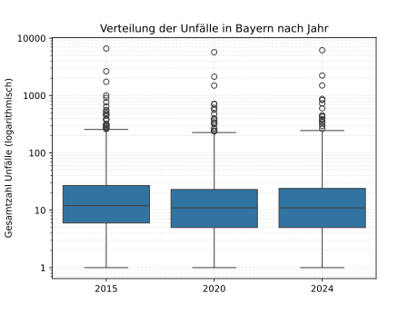

Autor: Natalie Kammerzell / Datum: 12.02.2026
| Jahr | Unfällezahl gesamt | Unfälle mit Personenschaden |
|---|---|---|
| 2015 | 65 999 | 53 823 |
| 2020 | 54 760 | 46 013 |
| 2024 | 58 872 | 49 374 |
Die Karte veranschaulicht die räumliche Verteilung der Verkehrsunfälle mit Personenschaden in Bayern in den Jahren 2015, 2020 und 2024. Auffällig ist eine deutliche Konzentration der Unfälle in den größeren Städten sowie entlang der Autobahnen. Etwa 20 % aller Unfälle ereignen sich in den fünf größten Städten Bayerns, was auf eine hohe Verkehrsbelastung und eine größere Verkehrsdichte in diesen urbanen Räumen zurückzuführen ist.
